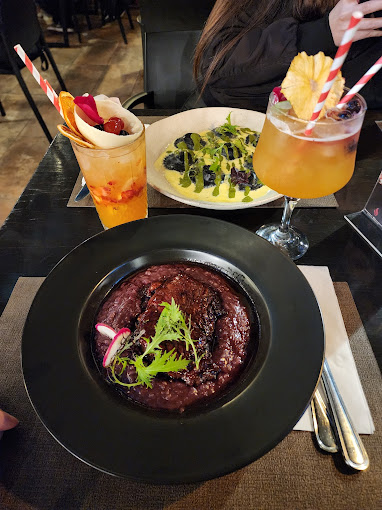

<ion-app class="gps">
    <ion-header>
      <ion-toolbar>       
        <div class="hcs">
          
          <ion-title></ion-title>   
        </div>
      </ion-toolbar>
      <ion-searchbar show-clear-button="focus" color="dark" value="Locales cerca"></ion-searchbar>
    </ion-header>

      <ion-row class="ion-align-items-end">
        <ion-card class="carta-local">
          
          <ion-card-header>
            <ion-card-title>Masamá Restaurante</ion-card-title>
            <ion-card-subtitle>Av. Libertad 1168</ion-card-subtitle>
          </ion-card-header>
        </ion-card>
      </ion-row>

</ion-app>